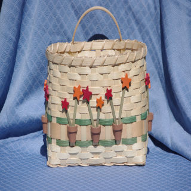
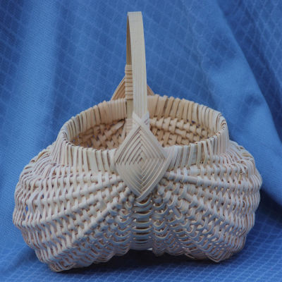
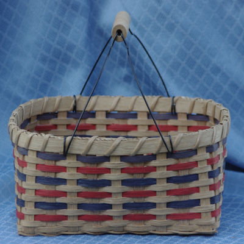

In the Fall of 1999 Ms. Vicki attended a basket weaving classes held in the home of a friend. It started as a social opportunity on Saturday mornings to relieve stress from a busy work week, but it became a lifetime love and appreciation for one of the oldest skills known to mankind. Each year brought new opportunities and new basket patterns. By 2009 she had made over fifty baskets which filled her home and the homes of friends and family. She also enjoyed teaching in her home the skills that she had learned. Since her teacher did not charge for her classes and saw it as an opportunity to share and make new friends this has been the philosophy that Ms. Vicki has passed along to her students. Over the years she has taught many people the basic skills of basket weaving ranging in age from 5 to 70. It has brought great joy into her life to watch others fall in love with this art. Since most baskets can be made in only a few hours it also brings a feeling of accomplishment and satisfaction to her life.
In the Fall of 1999 Ms. Vicki attended a basket weaving classes held in the home of a friend. It started as a social opportunity on Saturday mornings to relieve stress from a busy work week, but it became a lifetime love and appreciation for one of the oldest skills known to mankind. Each year brought new opportunities and new basket patterns. By 2009 she had made over fifty baskets which filled her home and the homes of friends and family. She also enjoyed teaching in her home the skills that she had learned. Since her teacher did not charge for her classes and saw it as an opportunity to share and make new friends this has been the philosophy that Ms. Vicki has passed along to her students. Over the years she has taught many people the basic skills of basket weaving ranging in age from 5 to 70. It has brought great joy into her life to watch others fall in love with this art. Since most baskets can be made in only a few hours it also brings a feeling of accomplishment and satisfaction to her life.
 By studying the patterns and the instruction of other basket weavers, she has learned to design her own creations and write her own patterns. She has gifted many of her baskets, but she also sells baskets at local craft fairs. In November of 2019 she opened a shop on Etsy.com which has allowed her to share her baskets with people all across the United States and other countries as far away as Finland. In October of 2019 she joined a local basket weaving guild which connected her with other basket weavers and has provided new opportunities for her to learn from professional basket weavers. The guild is also connected with other guilds and conventions which will provide new basket patterns and new opportunities. The future looks bright with so many baskets to make and new friends to meet.
 